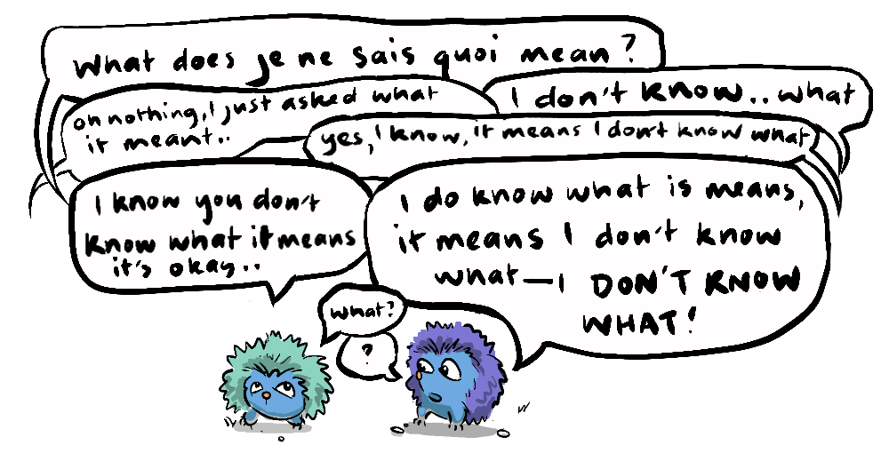

'Reason' (this painting) was inspired by the story and was included in my Empire of Idols exhibition in 2013. The human in the picture is modelled on a young version my grandfather (who introduced me to Asimov).
At the beginning of this series, Steven Pinker suggests that we find emergent phenomena beautiful because we recognise in them the process we have to thank for our very existence. In Pinker's own way he is making a secular appeal to seeing the hand of our "creator" (the principle of emergence) in the world around us.
There are many practical reasons we find things beautiful, vibrant ripe fruits tell us that there are calories to be had—and those saturated colours, evoke strong feelings if they are emblazoned on an insect's back or seen pouring from a person's lacerated torso.
Creativity too has its own utility—those with a propensity to whittle away will find themselves better equipped to create weapons, visual artists can employ their skills to create cave paintings conveying stories about threats, food sources or passing down hard won lessons from their ancestors.

Recognising patterns in nature helps us make accurate predictions. To understand that a river flows, because rivers are an emergent property of water and gravity, tells us that this river comes from somewhere elevated and likely flows to a large body of water and this helps us make informed decisions. This evolutionary sensitivity to patterns, could well explain why emergence, which produces patterns—often in a revelatory way, is so satisfying to our senses.
Ferns, snowflakes, Romanesco Broccoli all exhibit self-similar detail at different scales. They follow a rule, out of which infinite complexity arises. In fact, mathematically, a fractal actually exists between dimensions—the Mandelbrot Set's border, for instance, lies somewhere between 1 and 2 dimensions, due to its infinite complexity. As with observing other emergent phenomena, there is something transcendent that I, at least, feel when observing a fractal—a sense of being able to grasp the pattern but not the infinity it tends toward.
In this way nature and even digital fractals contain that je ne sais quoi that we appreciate in a great art work, musical composition, or an enigmatic facial expression. The sort of beauty that speaks to something innate and irreducible.
The same goes for "life-like" behaviours. After creating the graviton simulation, I discovered Ventrella, another artist exploring emergent phenomena through computer simulations, but he's been developing these ideas for decades, and has a wealth of fascinating projects. I encourage you to check out his Clusters simulation.
To the larger question though; do beauty, love, the numinous have any meaning in a world ruled by entropy driving us toward to universal demise? Well, that depends on what meaning is. In it's Subjective I have made a case that the fact that meaning and value are dependent on subjective experience doesn't diminish them in any way or make them arbitrary—in fact subjective experience is what gives meaning and value their quality and significance.
The relevance of our present experience to meaning is best expressed by the great philosopher 'Buddy' from the movie 'Free Guy' when confronted with the possibility that he's living in a simulation.
"I am sitting here with my best friend, trying to help him get through a tough time. Right? And even if I'm not real, this moment is, right here, right now—this moment is real. I mean, what's more real than a person trying to help someone they love? Now if that's not real, I don't know what is."
- Buddy (Free Guy)
Neuroscientist Sam Harris makes the point that our experience is always now, even our plans for the future are forecast for a future you who will experience them in the present, meaning beauty and value are all right here in our conscious experience.
"What matters is consciousness and its contents—consciousness is everything."
—Sam Harris
To bring this into high relief, imagine a future where we bequeath our world to an intellectually superior artificial intelligence that has no conscious experience—this robot race has ultimate and instrumental goals that lead it to continue activity perpetually, but it has no quality of experience—there is nothing it is like to be this AI. What value could there be in such a universe? There is something chilling in this picture is there not? Because we acknowledge that any significant meaning takes place in conscious experience.

This series has been written while I've been reading Robert Wright's 'Non-Zero' which makes the case for emergence in the form of ever-increasing non-zero-sumness. His writing has informed my reasoning throughout, and yet we come to opposite conclusions.

In the controversial final chapters of 'Non-Zero', Wright wants to make the case that it's not crazy to imagine that the arrow of progress entailed by a principle of universal emergence suggests ultimate purpose, teleology and perhaps even design. To me it suggests the opposite. If we look back to our evolutionary purpose, it is to act as a replicator for our genes, not exactly a noble or profound vocation. It stands to reason that the further back we go, in terms of our cosmic purpose dictated by the universe itself, we are likely to find an even more mundane and uninteresting goal—one we've explored; the imperative to increase entropy. If emergence is about going from the simple and random to the complex and ordered, then as we look back, we will find simple beginnings, simple rules, not the sort of purpose we might think of as conceived by a mind.
Wright makes the same incorrect inference as the robot QT-1 (Cutie) makes in Issac Asimov's short story "Reason":
"You see," Cutie continued calmly, "before you can make me believe that humans made me or indeed anything at all, you must help me understand why it is reasonable to believe that something less complicated, something less efficient, something less capable, could create something that is more complicated, more efficient, and more capable than itself. It does not follow the laws of logic. To me, the only logical conclusion is that I was created by something far superior to humans: The Master."
'Reason' (this painting) was inspired by the story and was included in my Empire of Idols exhibition in 2013. The human in the picture is modelled on a young version my grandfather (who introduced me to Asimov).
Cutie argues that he could not have been made by humans, because he is more capable. Ironically Cutie's reasoning is flawed—The principle of emergence holds that simpler phenomena give rise to more complex phenomena all the time, throughout cosmic history.
I argue this point, because I think many hold an assumption that without a pre-ordained purpose coming in the form of a universal dictate there is no way to find meaning in the world. But this has the idea of meaning exactly backwards. Meaning is itself emergent, it increases alongside complexity, if the universe is analogous to a mind, we are not the implementation of a pre-conceived idea, we are the idea itself being conceived.

Beauty, interpersonal connection and meaning are exclusively conscious experiences, that take place in the here and now—if this were not the case they would be meaningless. Beauty and creativity has practical evolutionary reasons for being, and in this way it is not merely a superficial decoration in the ballroom of the mind by something that can be understood and communicated, something that can connect us.
"There is no more intimate act than play"—Gabrielle Zevin (Tomorrow and Tomorrow and Tomorrow)
Meaning is found in the space between one another; intimacy, play, the tension of opposites, the known present and unknown future. Our complex minds, interacting with other complex minds, build meaning, answers are revealed along with new questions. The more you learn, the more you become aware of what you don't know—a signal that we are always growing, and that profound realizations exist just over the horizon—yet another glimpse of the infinite. If that's not meaningful, I don't know what is.

I hope that this series has helped to illustrate the universality of non-zero-sum games, through the principle of emergence. I think it is a hopeful and practical perspective to take in the world, reminding us that though life can at times feel like a struggle, and despite an inevitable entropic fate, we are fortunate to benefit from a universal tail wind pushing us toward greater complexity, order, beauty and meaning.